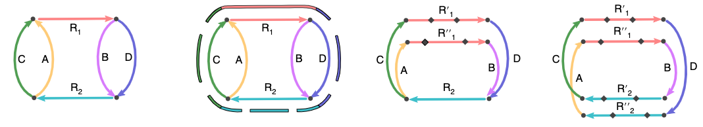
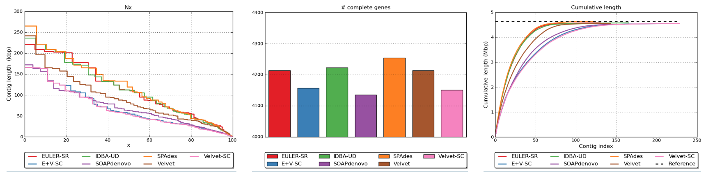

Assembling the genome and QC
Contents
Assembling the genome and QC#
In this notebook we are going to assemble the QC-ed sequence data you have just produced using the program Flye.
1. The Flye assembler#

Figure from the Flye manuscript (Kolmogorov et al 2019) of strategies for resolving repeats
Flye is one of many genome assemblers, but is very efficient for assembling bacterial genomes. You are going to use this to process your fastq data files into 1 or more contigs representing the E. coli genome.
Kolmogorov M, Yuan J, Lin Y, Pevzner PA. Assembly of long, error-prone reads using repeat graphs. Nat Biotechnol. 2019;37: 540–546. doi:10.1038/s41587-019-0072-8
1.1 Check Flye is installed correctly#
test your installation of Flye
flye -help
You should get Flye help written out.
1.2 Developing your assembly command#
Read the help, and read the Flye documentation.
Now write your command to assemble the data. You will have to tell Flye what format your data is, where the files are and what they are called, where to write the output and how many threads to use in running the program.
Flye needs to know:
that your reads are nanopore raw (–nano-raw)
the genome size (-g) of E. coli - you will need to find this
# write your FLYE command here
1.3 Running the Flye assembler#
Once you have written your command check it with one of us.
You may then wish to run Flye and assemble your genome
1.4 Flye output#
You are expecting Flye to write a number of files once it has completed.
From the Flye docs, the main output files are:
assembly.fasta - Final assembly. Contains contigs and possibly scaffolds (see below).
assembly_graph.{gfa|gv} - Final repeat graph. Note that the edge sequences might be different (shorter) than contig sequences, because contigs might include multiple graph edges.
assembly_info.txt - Extra information about contigs (such as length or coverage).
2. Assembly QC#
How well have you assembled your data into a genome?
The assembly_info.txt file written by the asssembler will give you some statistics about your new genome.
2.1 QUAST assembly QC#
QUAST is software that evalutes genome assemblies, you can read about it on its web page and manual
Gurevich A, Saveliev V, Vyahhi N, Tesler G. QUAST: quality assessment tool for genome assemblies. Bioinformatics. 2013;29: 1072–1075. doi:10.1093/bioinformatics/btt086

example plots produced by QUAST
QUAST will examine many aspects of your assembly. It will also need access to your raw reads (*.fastq.gz files). Think about why.
QUAST will examine the match between reads and assembly contigs. If a lot of reads do not map to the asssembled contigs then this would suggest that these contigs do not represent the whole genome, just a part of it. There must be more still to assemble and represented by these sequence reads.
The QUAST website has interactive examples of genome reports including a report for E. coli. Have a look at this report.
How many contigs have been assembled from the reads? Are you clear on the meaning of ‘contig’?
How big is the assembled genome across these contigs? How does that compare to expected size?
What is the N50? This is a frequently used assembly statistic, can you explain in a couple of sentences what it means? (Google it, and practice explaining in your groups)
2.2 Running QUAST#
QUAST output forms a major part of competency 2 (below).
We are going to run QUAST on the QUAST server. I hope this works fine, it did when I was testing it, but it will depend on how many people around the world are using the server.
Go to the QUAST job submision web page.
You will need to upload your assembly fasta file
You need to set the reference genome to “E.coli strain K-12”
Hit “Evaluate”
On the right hand side of the screen you should see that your job is listed as processing. Sometimes it says processing forever and you can fix this by refreshing the page, or just clicking on the job to see the results.
2.3 Understanding QUAST output#
Once of the most challenging aspects of this course is just how much information you get from some of the analysis programs. Don’t be overwhelmed by the QUAST output.
You might like to refer to the QUAST manual for more information.
Actions:
Make sure you have downloaded the report, and have a copy somewhere safe
Read the manual and Google any terms you don’t understand in the QUAST report, and discuss their relevance with others in the class
After completing this first task groups of you can discuss it with a demonstrator or I
Not every term or statistic in the QUAST report is essential. It gives a very large number of ways to look at the data. Which are the most interesting types of statistic?
COMPETENCY 2#
To complete competency 2 you will need to produce appropriate tabular and/or graphical descriptions of your sequence and assembly data
There are multiple ways to do this to fulfil competency.
You have already used seqkit stats to produce simple summary tables before and after quality control of the reads. This could be your ‘tabular descriptions of your sequence data’
‘tabular and/or graphical descriptions of your assembly data’ are provided by QUAST
I would like you incorporate into your competency portfolio a section containing ‘appropriate tabular and/or graphical descriptions of your sequence and assembly data’ as described above.
I would like you to summarise your QUAST output in a single short paragraph in this submitted document so that the reader knows whether you think it is a good, bad, or medium assembly and why.
Discuss with one of us if you need some help interpreting the QUAST output and turning it into this paragraph.
Why do we ask for this competency? Firstly, we have to assess you somehow, and these small competencies seem like a good way. Secondly, and much more importantly, if you can describe the quality of your data and assembly clearly and accurately then you are in great shape to write up your manuscript for the final assessment. Doing a great job on this will help you later.